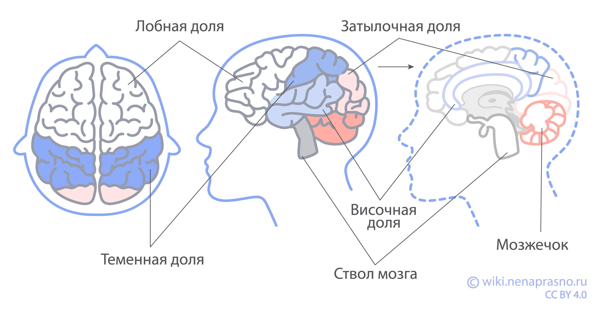
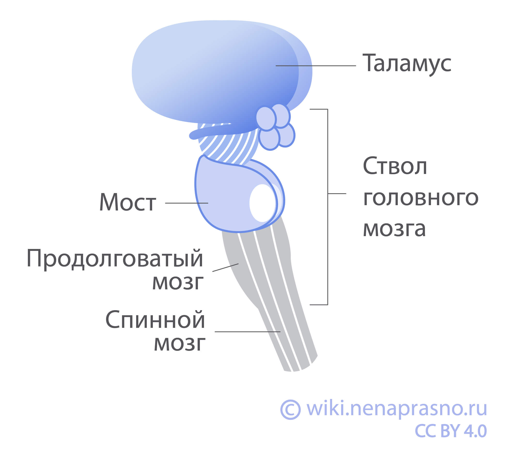

Головной мозг — орган, который контролирует работу всех остальных органов и систем. Он получает информацию от всех органов чувств, обрабатывает ее и отвечает за мышление, речь, эмоции.
The brain is the organ that controls the functioning of all other organs and systems. It receives information from all the senses, processes it, and is responsible for thinking, speech, and emotions.
Бассүйек - барлық басқа мүшелер мен жүйелердің жұмысын басқаратын мүше. Ол барлық сезім мүшелерінен ақпарат алады, өңдейді және ойлау, сөйлеу, эмоциялар үшін жауап береді.
Головной мозг состоит из белого и серого вещества. Серое вещество (кора головного мозга) — это тела нервных клеток (нейронов). Это «центр управления» организма. Белое вещество — отростки нейронов, которые соединяют разные отделы головного мозга между собой и со спинным мозгом. Они похожи на магистрали, по которым сигналы, как машины, мчатся от коры головного мозга к другим отделам и обратно.
The brain consists of white and gray matter. Gray matter (cerebral cortex) is the bodies of nerve cells (neurons). This is the "control center" of the body. White matter is the processes of neurons that connect different parts of the brain to each other and to the spinal cord. They are like highways through which signals, like cars, rush from the cerebral cortex to other parts and back.
Бассүйек ақ және сұр заттан тұрады. Сұр зат (бассүйек қыртысы) - бұл жүйке жасушаларының (нейрондардың) денелері. Бұл организмнің "басқару орталығы". Ақ зат - бұл бассүйектің әртүрлі бөлімдерін бір-бірімен және жұлынмен жалғайтын нейрондардың өсінділері. Олар бассүйек қыртысынан басқа бөлімдерге және кері қарай сигналдарды тасымалдайтын магистральдар сияқты.
Каждая часть головного мозга состоит из более мелких частей, которые выполняют свои функции. Выделяют три основные части головного мозга:
Each part of the brain consists of smaller parts that perform their functions. There are three main parts of the brain:
Бассүйектің әрбір бөлігі өз функциясын атқаратын кішірек бөліктерден тұрады. Бассүйектің үш негізгі бөлігі бар:
большие полушария,
cerebral hemispheres,
үлкен жарты шарлар,
мозжечок,
cerebellum,
мишық,
ствол головного мозга
brain stem
бассүйек сабағы
Большие полушария
Cerebral hemispheres
Үлкен жарты шарлар
Если посмотреть на головной мозг сверху, можно увидеть, что посередине он разделен на два больших полушария. Между собой полушария соединены своеобразным «мостом» из белого вещества — мозолистым телом. Мозолистое тело объединяет работу обоих полушарий в единое целое. На каждом полушарии есть борозды, которые разделяют кору головного мозга на извилины.
If you look at the brain from above, you can see that it is divided into two large hemispheres in the middle. The hemispheres are connected by a kind of "bridge" of white matter - the corpus callosum. The corpus callosum unites the work of both hemispheres into a single whole. Each hemisphere has grooves that divide the cerebral cortex into convolutions.
Бассүйекті жоғарыдан қарасаңыз, оның ортасынан екі үлкен жарты шарға бөлінгенін көруге болады. Жарты шарлар бір-біріне ақ заттан жасалған "көпір" арқылы - дене қалқаншасы арқылы жалғасқан. Дене қалқаншасы екі жарты шардың жұмысын біртұтас бүтінге біріктіреді. Әр жарты шарда бассүйек қыртысын иірімдерге бөлетін ойықтар бар.
Кора головного мозга состоит из четырех долей:
The cerebral cortex consists of four lobes:
Бассүйек қыртысы төрт бөліктен тұрады:
лобная доля отвечает за мышление, концентрацию, эмоции, мотивацию, суждения и планирование, а также контролирует поведение;
the frontal lobe is responsible for thinking, concentration, emotions, motivation, judgment and planning, and also controls behavior;
маңдай бөлігі ойлауға, шоғырлануға, эмоцияларға, мотивацияға, шешім қабылдауға және жоспарлауға жауап береді, сонымен қатар мінез-құлықты бақылайды;
теменная доля получает и обрабатывает информацию от чувствительных рецепторов (например, оценивает положение тела, температуру, текстуру объектов) и отвечает за способность понимать разговорную речь и выражать себя через нее;
the parietal lobe receives and processes information from sensory receptors (for example, assesses body position, temperature, texture of objects) and is responsible for the ability to understand spoken language and express oneself through it;
төбе бөлігі сезімтал рецепторлардан ақпарат алады және өңдейді (мысалы, дененің орнын, температурасын, заттардың текстурасын бағалайды) және сөйлеу тілін түсіну және ол арқылы өзін білдіру қабілетіне жауап береді;
в затылочной доле находится зрительный центр, который обрабатывает информацию, поступающую от глаз;
the occipital lobe contains the visual center that processes information coming from the eyes;
затыл бөлігінде көзден келетін ақпаратты өңдейтін көру орталығы орналасқан;
височная доля включает центр слуха, восприятия речи, а также обрабатывает информацию о голоде и боли, отвечает за эмоции, память, понимание слов и указаний.
the temporal lobe includes the hearing center, speech perception, and also processes information about hunger and pain, is responsible for emotions, memory, understanding words and instructions.
висцералды бөлік есту орталығын, сөйлеуді қабылдауды қамтиды, сонымен қатар аштық пен ауырған туралы ақпаратты өңдейді, эмоцияларға, жадыға, сөздерді және нұсқауларды түсінуге жауап береді.

Мозжечок
Cerebellum
Мишық
Мозжечок расположен позади ствола, под затылочными долями головного мозга. Он также разделен на два полушария, между которыми находится червь мозжечка. Главная функция мозжечка — это координация движений. Он контролирует равновесие, плавность движений, мышечный тонус, позу тела. В мозжечке хранится информация о натренированных движениях. Это позволяет человеку совершать сложные скоординированные движения (например, балетные пируэты, гимнастические элементы) и сохранять равновесие.
The cerebellum is located behind the brainstem, under the occipital lobes of the brain. It is also divided into two hemispheres, between which is the cerebellar vermis. The main function of the cerebellum is the coordination of movements. It controls balance, smoothness of movements, muscle tone, body posture. The cerebellum stores information about trained movements. This allows a person to perform complex coordinated movements (for example, ballet pirouettes, gymnastic elements) and maintain balance.
Мишық бассүйек сабағының артында, бассүйектің затыл бөліктерінің астында орналасқан. Ол да екі жарты шарға бөлінген, олардың арасында мишық құрты орналасқан. Мишықтың басты функциясы - қозғалыстарды үйлестіру. Ол тепе-теңдікті, қозғалыстардың жұмсақтығын, бұлшықет тонусын, дененің қалыптарын бақылайды. Мишықта жаттығылған қозғалыстар туралы ақпарат сақталады. Бұл адамға күрделі үйлесімді қозғалыстарды (мысалы, балет пируэттерін, гимнастикалық элементтерді) орындауға және тепе-теңдікті сақтауға мүмкіндік береді.
Ствол головного мозга
Brain stem
Бассүйек сабағы

Ствол головного мозга — это наиболее древняя его частью с точки зрения эволюции. Он соединяет головной мозг со спинным. Ствол мозга включает в себя продолговатый мозг, варолиев мост и средний мозг. Иногда сюда включают еще промежуточный мозг. Ствол мозга контролирует критически важные функции организма, такие как дыхание, артериальное давление, сердцебиение.
The brainstem is the most ancient part of it from an evolutionary point of view. It connects the brain to the spinal cord. The brainstem includes the medulla oblongata, pons, and midbrain. Sometimes the diencephalon is also included here. The brainstem controls critically important body functions such as breathing, blood pressure, and heartbeat.
Бассүйек сабағы - эволюция тұрғысынан оның ең ежелгі бөлігі. Ол бассүйекті жұлынмен жалғайды. Бассүйек сабағына ұзынша ми, Варолий көпірі және ортаңғы ми кіреді. Кейде мұнда аралық ми да қосылады. Бассүйек сабағы тыныс алу, қан қысымы, жүрек соғуы сияқты организм үшін өте маңызды функцияларды бақылайды.
Выводы
Conclusions
Қорытынды
Головной мозг — один из наиболее важных органов в организме, он контролирует работу других органов и систем.
The brain is one of the most important organs in the body, it controls the work of other organs and systems.
Бассүйек - ағзадағы ең маңызды мүшелердің бірі, ол басқа мүшелер мен жүйелердің жұмысын басқарады.
Основные отделы головного мозга — большие полушария, мозжечок, ствол головного мозга.
The main parts of the brain are the cerebral hemispheres, cerebellum, and brain stem.
Бассүйектің негізгі бөлімдері - үлкен жарты шарлар, мишық және бассүйек сабағы.
Каждый отдел головного мозга выполняет свою функцию.
Each part of the brain performs its function.
Бассүйектің әрбір бөлімі өз функциясын атқарады.
Мозговые оболочки и ликвор защищают мозг от внешних воздействий.
The meninges and cerebrospinal fluid protect the brain from external influences.
Ми қабықтары мен ликвор миды сыртқы әсерлерден қорғайды.